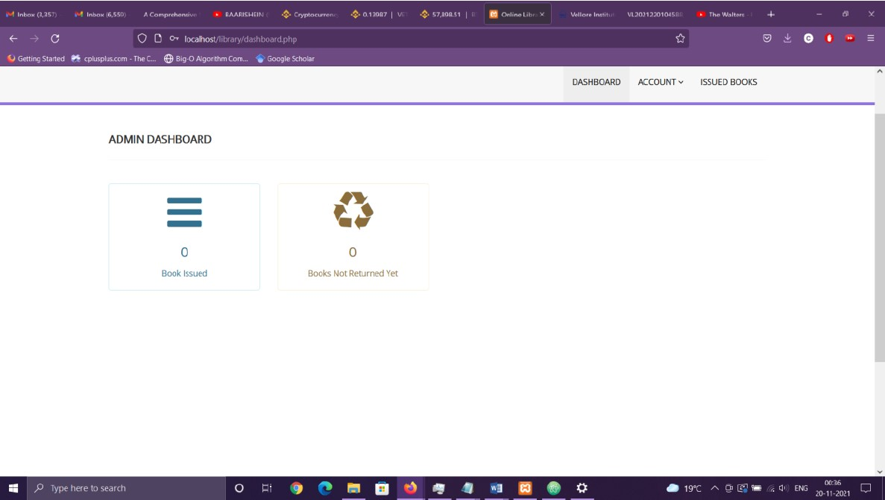

Laboratory Management System
This was a project I started back in my second year when I first learned DBMS.
Admin had the ability to view all their data with a dynamic search form, trend data, add notes to reports and even map their Issue and Return dates.
I worked on this system for 4 months
Library Admin Dashboard
